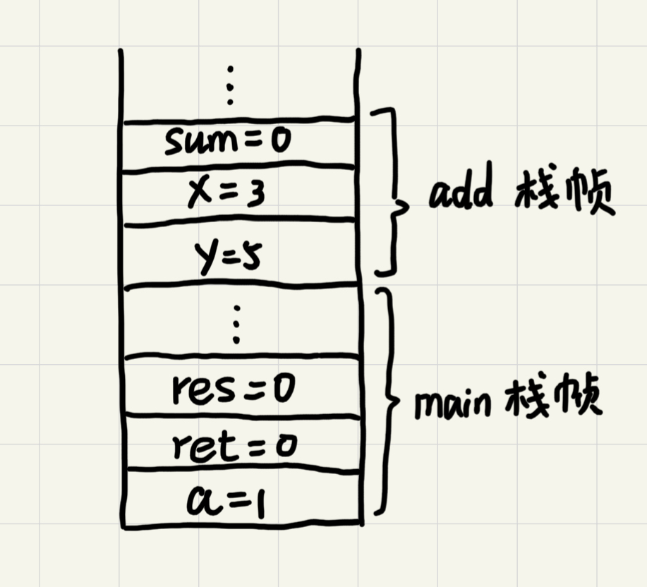
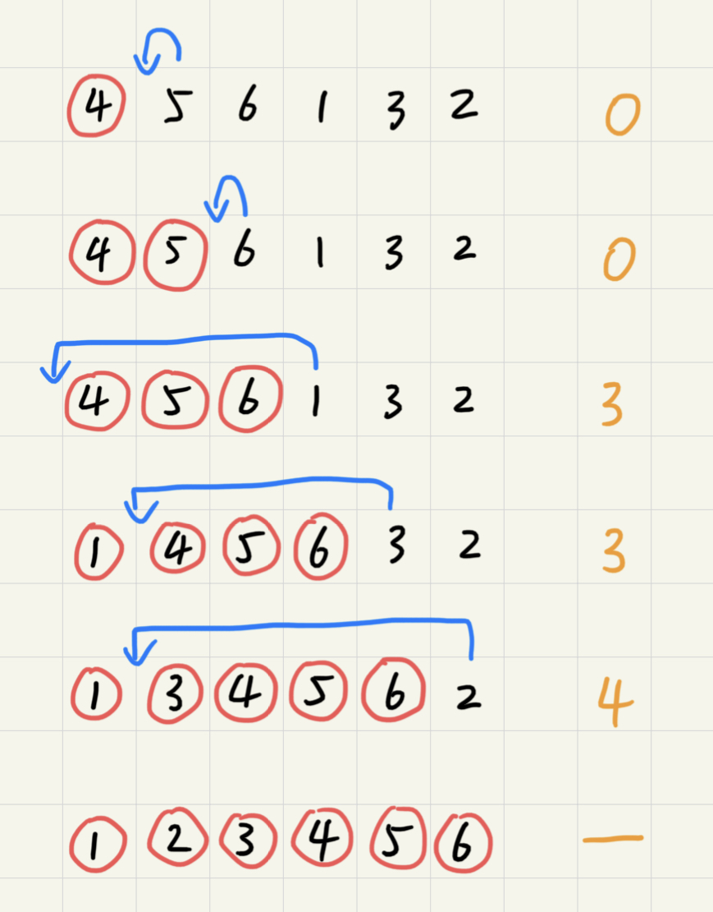
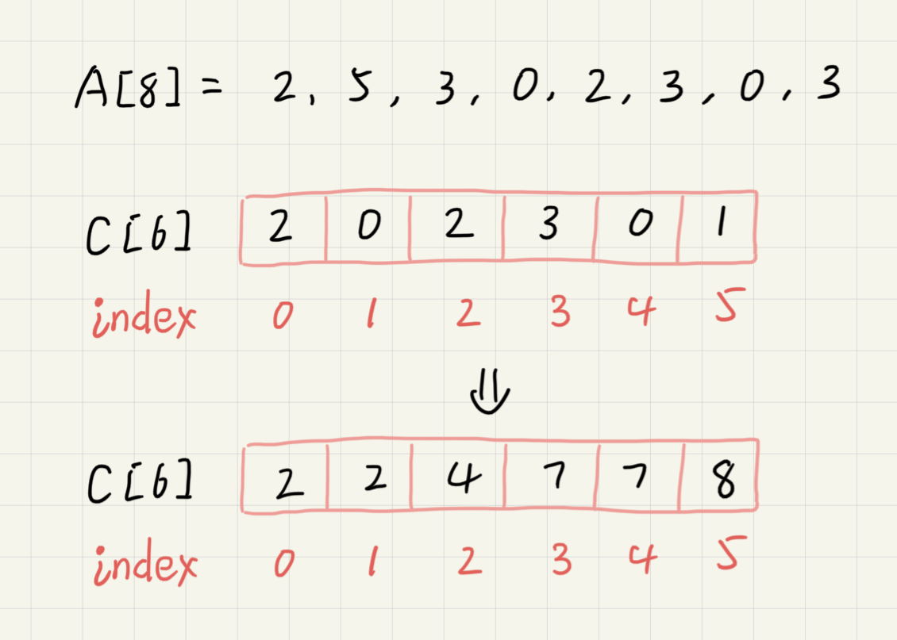
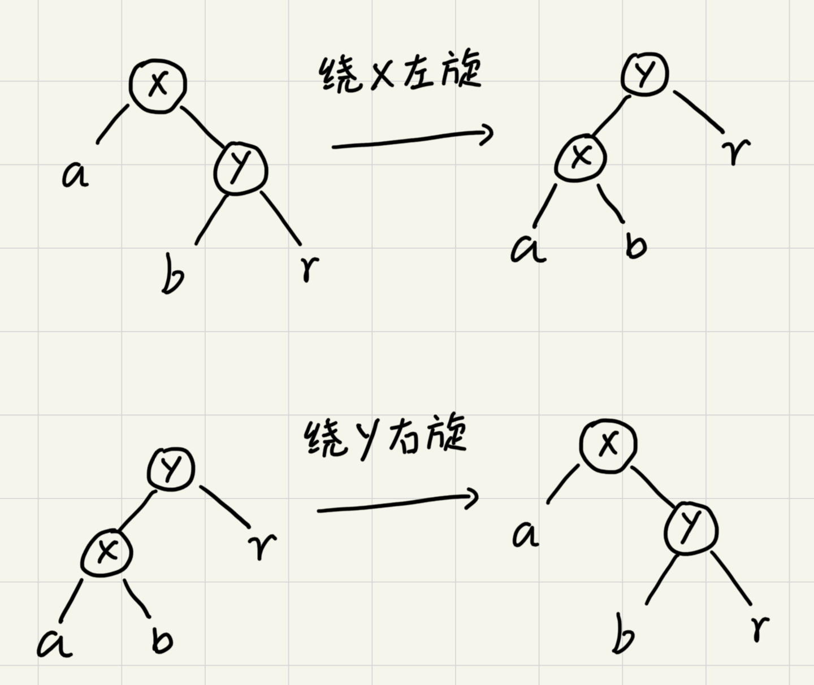

数组
数组是一种线性表数据结构。它用一组连续的内存空间，来存储一组具有相同类型的数据。
线性表
数据排成像一条线一样的结构。每个线性表上的数据最多只有前和后两个方向。除了数组，链表、队列、栈等也是线性表结构。
与之相对的是非线性表，如二叉树、图、堆等。之所以叫做非线性表，是因为在非线性表中数据之间并不是简单的前后关系。
随机访问
因为有了连续的内存空间和相同类型的数据和线性表这两个限制，数组得以实现“随机访问”。同时，这两个限制也让数组的很多操作变得低效，比如要想在数组中删除、插入一个数据，为了保证连续性，就需要做大量的数据搬移工作。
计算机会给每个内存单位分配一个地址，通过地址来访问内存中的数据。当计算机需要随机访问数组中的某个元素时，他会首先通过寻址公式a[i]_address = base_address + i * data_type_size计算出该元素存储的内存地址。其中data_type_size表示数组中每个元素的大小。
低效的“插入”和“删除”
假设数组的长度为n，现在，如果我们需要将一个数据插入到数组中的第k个位置。为了把第k个位置腾出来给新来的数据，我们需要将第k~n这部分的元素都顺序地往后挪一位。如果在数组的末尾插入数据，不需要移动数据，时间复杂度为O(1)。但如果在数组的开头插入元素，那所有的数据都需要依次往后移动一位，所以最坏的时间复杂度为O(n)。因为我们在每个位置插入元素的概率是一样的，所以平均情况时间复杂度为(1+2+...n)/n=O(n)。
但是如果数组只是被当作存储数据的集合，存储的数据之间没有任何规律。在这种情况下，如果要将某个数据插入到第k个位置，为了避免大规模的数据搬移，我们可以直接将第k位的数据搬移到数组末尾，把新元素直接放入第k个位置。
跟插入数据类似，删除第k个位置的数据也需要搬移数据。平均时间复杂度也是O(n)。
必知必会
实现一个支持动态扩容的数组
实现一个大小固定的有序数组，支持动态增删改操作
实现两个有序数组合并为一个有序数组
链表
数组需要一块连续的内存空间来存储，对内存要求比较高。而链表恰恰相反，它并不需要一块连续的内存空间，它通过“指针”将一组零散的内存块串联起来使用。
链表中零散的内存块称为节点，为了将所有的节点串联起来，每个链表的节点除了存储数据之外还需要记录链上的下一个节点的地址。这个记录下个节点地址的指针称为后继指针next。
链表中的第一个节点称为头节点，最后一个节点叫做尾节点。其中，头节点用来记录链表的基地址，可以由此遍历得到整条链表。而尾节点特殊的地方在于指针不是指向下一个节点，而是指向一个空地址NULL，表示这是链表上的最后一个节点。
删除和插入
与数组一样，链表也支持数据的查找、插入和删除操作。
在进行数组的插入、删除操作时，为了保持内存数据的连续性，需要做大量的数据搬移，所以时间复杂度时O(n)。而在链表中插入或删除一个数据并不需要保持内存的连续性和搬移节点，因为链表的存储空间本身就不是连续的。针对链表的插入和删除操作，只需要考虑相邻节点的指针改变，所以对应的时间复杂度时O(1)。

单链表
链表的删除和插入操作时间复杂度是O(1)。但代价是对于数据的随机访问，链表没有数组那么高效。因为链表的数据并非连续存储的，所以无法像数组那样根据首地址和下标通过寻址公式直接计算出对应的内存地址，而是需要根据指针一个节点一个节点地依次遍历直到找到相应的节点，时间复杂度为O(n)。
循环链表
循环链表是一种特殊的单链表。循环链表跟单链表的区别在于循环链表的尾节点指向头节点而不是指向NULL。
和单链表相比，循环链表的优点是从链尾到链头比较方便。当要处理的数据具有环型结构特点时，就特别适合采用循环链表。比如著名的约瑟夫问题。尽管用单链表也可以实现，但是用循环链表实现的话代码会简洁很多。
双向链表
双向链表支持两个方向，每个节点不止有一个后继指针next指向后面的节点，还有一个前驱指针prev指向前面的节点。双向链表需要额外的两个空间来存储后继节点和前驱节点的地址。所以，如果存储同样多的数据，双向链表要比单链表占用更多的内存空间。但支持双向遍历也带来了更高的操作灵活性，使得双向链表可以在O(1)时间复杂度的情况下找到前驱节点。正式这样的特点，也使双向链表在某些情况下的插入、删除等操作都要比单链表更加高效。
数组与链表的对比

必知必会
实现单链表、循环链表、双向链表，支持增删操作
实现单链表反转
实现两个有序的链表合并为一个有序链表
实现求链表的中间节点
栈
后进者先出，先进者后出，这就是典型的“栈”结构。
从栈的操作特性上来看，栈是一种“操作受限”的线性表，只允许在一端插入和删除数据。
如何实现一个“栈”
栈可以用数组实现，也可以用链表实现。用数组实现的叫顺序栈，用链表实现的链式栈。
// 基于数组实现的顺序栈
type ArrayStack struct {
items []string // 数组
count int // 栈中元素个数
n int // 栈的大小
}
func NewArrayStack(capacity int) *ArrayStack {
return &ArrayStack{
items: make([]string, capacity),
count: 0,
n: capacity,
}
}
// 入栈
func (s *ArrayStack) Push(item string) bool {
// 数组空间不够，入栈失败
if s.count >= s.n {
return false
}
// 将item放到下标为count的位置，并且count加一
s.items[s.count] = item
s.count++
return true
}
// 出栈
func (s *ArrayStack) Pop() string {
// 栈为空
if s.count == 0 {
return ""
}
// 返回下标为count-1的数组元素，并且栈中元素个数count减一
s.count--
return s.items[s.count]
}
不管是顺序栈还是链式栈，存储数据只需要大小为n的存储空间。在入栈和出栈过程中，只需要一两个临时变量存储空间，所以空间复杂度是O(1)。不管是顺序栈还是链式栈，入栈、出栈只涉及栈顶个别数据的操作，所以时间复杂度都是O(1)。
栈在函数调用中的应用
操作系统给每个线程分配一块独立的内存空间，这块内存被组织成“栈”这种结构，用来存储函数调用时的临时变量。每进入一个函数，就会将临时变量作为一个栈帧入栈，当被调用函数执行完成，返回之后，将这个函数对应的栈帧出栈。
int main() {
int a = 1;
int ret = 0;
int res = 0;
ret = add(3, 5);
res = a + ret;
printf("%d\n", res);
return 0;
}
int add(int x, int y) {
int sum = 0;
sum = x + y;
return sum;
}
从代码中看出，main()函数调用了add()函数获取计算结果并且与临时变量a相加，最后打印res的值。

栈在表达式求值中的应用
编译器利用两个栈来实现表达式求值。其中一个栈保存操作数，另一个保存运算符。从左向右遍历表达式，遇到数字时压入栈中；遇到运算符就与运算符栈的栈顶元素进行比较。如果比运算符栈顶元素的优先级高，将当前运算符压入栈中，否则取出栈顶运算符，从操作数栈的栈顶取2个操作数进行计算，再把计算完的结果压入操作数栈，之后继续下一轮比较。

栈在括号匹配中的应用
假设表达式中只包含三种括号，圆括号()、方括号[]和花括号{}，并且它们可以任意嵌套。
用一个栈来存储未匹配的左括号，从左到右依次扫描字符串。当扫描到左括号时将其压入栈中；当扫描到右括号时，从栈顶取出一个左括号。如果能够匹配，则继续下一轮压栈匹配，否则表示匹配不了，表达式非法。
必知必会
用数组实现一个顺序栈
用链表实现一个链式栈
模拟浏览器的前进、后退功能
队列
队列跟栈非常相似，是一种操作受限的线性表数据结构，支持的操作也有限，最基本的操作也是两个：入队(enqueue)，放一个数据到队列尾部；出队(dequeue)，从队列头部取一个元素。
顺序队列和链式队列
用数组实现的队列叫顺序队列，用链表实现的链式队列。
// 用数组实现的队列
type ArrayQueue struct {
// 数组：items，数组大小：n
items []string
n int
// head表示队头的下标，tail表示队尾的下标
head int
tail int
}
func NewArrayQueue(capacity int) *ArrayQueue {
return &ArrayQueue{
items: make([]string, capacity),
n: capacity,
head: 0,
tail: 0,
}
}
// 入队
func (aq *ArrayQueue) Enqueue(item string) bool {
// tail == n 表示队列已满
if aq.tail == aq.n {
return false
}
aq.items[aq.tail] = item
aq.tail++
return true
}
// 出队
func (aq *ArrayQueue) Dequeue() string {
// head == tail 表示队列为空
if aq.head == aq.tail {
return ""
}
ret := aq.items[aq.head]
aq.head++
return ret
}
对于栈来说，我们只需要一个栈顶指针就可以了。但是队列需要两个指针：head和tail。

从上图中可以发现，随着不停进行入队出队，head和tail会持续往后移。当tail移动到最右边，即使数组还有空闲空间，也无法继续往队列中添加数据了。这时候就需要做数据搬移，保持出队操作不变，只在入队的时候做搬移操作。
// 入队
func (aq *ArrayQueue) Enqueue(item string) bool {
// tail == n 表示队列末没有空间了
if aq.tail == aq.n {
// head == 0 并且 tail == 0，表示队列已满
if aq.head == 0 {
return false
}
// 数据搬移
for i := aq.head; i < aq.tail; i++ {
aq.items[i-aq.head] = aq.items[i]
}
// 搬移后更新head和tail
aq.tail -= aq.head
aq.head = 0
}
aq.items[aq.tail] = item
aq.tail++
return true
}
从更改后的代码中可以看出，当队列的tail指针移动到数组的最右边后，如果新数据入队就将head到tail之间的数据整体搬移到数组中0到tail-head的位置。

平常的入队操作的时间复杂度仍然是O(1)，触发搬移的时候搬移的数据量为K(K<=n)，最差时间复杂度为O(n)，均摊到平常入队操作中计得平均得时间复杂度为O(1)。
type LinkQueue struct {
head *node
tail *node
}
func (q *LinkQueue) Enqueue(value string) {
newNode := &node{value: value}
if q.head == nil {
q.head = newNode
} else {
q.tail.next = newNode
}
q.tail = newNode
}
func (q *LinkQueue) Dequeue() string {
if q.head == nil {
return ""
}
value := q.head.value
q.head = q.head.next
if q.head == nil {
q.tail = nil
}
return value
}
链表实现的队列中没有固定空间大小，入队与出队的时间复杂度均为O(1)。
循环队列
在用数组实现的队列中，当tail==n时会有数据搬移操作，这样入队操作性能就会收到影响。使用循环队列可以避免搬移从而提升性能。

图中的循环队列大小为8，当继续入队一个数据的时候，tial不由原来的7更新为8，而是变成0回到了数组的头部，使得队列首尾相连。
这样的方法成功地避免了数据搬移，但是队列空和队列满的判断条件就和原来不一样了。在非循环的顺序队列中，队列的判断条件是tail==n，队列空的判断条件是head==tail。
对于循环队列，队列空的条件仍然是head==tail。在上图中，队列会在一直入队直到tail==3的时候达到队满，即队列满的条件为(tail+1)%n==head。此时tail是不存储数据的，也就是说循环队列会浪费一个数组的存储空间。
// 循环队列
type CycleQueue struct {
items []string
n int
head int
tail int
}
func NewCycleQueue(capacity int) *CycleQueue {
return &CycleQueue{
items: make([]string, capacity),
n: capacity,
head: 0,
tail: 0,
}
}
func (cq *CycleQueue) Enqueue(item string) bool {
if (cq.tail+1)%cq.n == cq.head {
return false
}
cq.items[cq.tail] = item
cq.tail = (cq.tail + 1) % cq.n
return true
}
func (cq *CycleQueue) Dequeue() (string, bool) {
if cq.head == cq.tail {
return "", false
}
item := cq.items[cq.head]
cq.head = (cq.head + 1) % cq.n
return item, true
}
阻塞队列和并发队列
阻塞队列在队列的基础上增加了阻塞操作。简单来说，就是在队列为空的时候，从队头取数据会被阻塞。因为此时还有没有数据可取，直到队列中有了数据才能返回；如果队列已满，那么插入插入数据的操作就会被阻塞，直到队列中有空闲位置后再插入数据。这其实就是一个生产者-消费者模型。
这种基于阻塞队列实现的“生产者-消费者模型”可以有效地协调生产和消费的速度。当生产者生产数据的速度过快，消费者来不及消费时，存储数据的队列很快就满。这个时候，生产者就阻塞等待，直到消费者消费了数据，生产者才会被唤醒继续生产。
而且不仅如此，基于阻塞队列，还可以通过协调生产者和消费者的个数，来提高数据的处理效率。比如可以多配置几个消费者来应对一个生产者。
线程安全的队列称为并发队列。最简单直接的实现方法是直接在入队和出队的方法上加锁，但是锁粒度大并发度会比较低，同一时刻仅允许一个存或者取操作。实际上，基于数组的循环队列，利用CAS原子操作可以实现非常高效的并发队列。这也是循环队列比链式队列应用更加广泛的原因。
必知必会
用数组实现一个顺序队列
用链表实现一个链式队列
实现一个循环队列
递归
可以用递归的解决的问题需同时满足以下三个条件：
- 一个问题的解可以分解为几个子问题的解
- 这个问题与分解之后的子问题，除了数据规模不同，求解思路完全相同，求解思路完全相同
- 存在递归终止条件
递归代码的编写
递归最关键的是写出递归公式，找到终止条件，然后将公式转换为代码。
假设有n个台阶，每次可跨过1个或者2个台阶，这n个台阶有多少种走法？如果有7个台阶，可以2，2，2，1这样子走完，也可以1，2，1，1，2这样子走完。实际上，可以根据第一部的走法把所有走法分为两类，第一类是第一步走了1个台阶，另一类是第一步走了2个台阶。多以n个台阶的走法就等于先走1阶后，n-1个台阶的走法加上先走2阶后，n-2个台阶的走法。公式表示为f(n) = f(n-1)+f(n-2)。
当只有一个台阶时，我们不需要继续递归，就只有一种走法。但是f(1)=1并不能作为唯一的终止条件，因为f(2)=f(1)+f(0)无法求解。所以终止条件为f(1)=1和f(2)=2。
堆栈溢出
每个函数的调用都会将临时变量封装成栈帧压入内存栈，等函数执行完成返回才出栈。系统栈或者虚拟机栈空间一般都不大。如果递归求解的数据规模很大，调用层次很深，一直压入栈就会有堆栈溢出的风险。
可以通过限制递归调用的最大深度来一定程度上解决这个问题，因为最大允许的递归深度跟当前线程剩余的栈空间大小有关，事先无法计算。而实时计算的代码过于复杂，会影响代码的可读性。所以如果最大深度比较小，如10、50，就可以用这种方法，否则这种方法并不是很实用。
重复计算
在f(n)=f(n-1)+f(n-2)中，f(5)=f(4)+f(3)，f(4)=f(3)+f(2)。可以发现f(3)会被重复计算很多次。

为了避免这个问题，可以通过一个数据结构（比如散列表）来保存已经求结过的f(k)。
其他问题
除了重复计算和堆栈溢出，递归还有很对其他问题。
在时间复杂度上，递归代码里多了很多函数调用。当这些函数调用的数量较大时，就会累计出可观的时间成本。
在空间复杂度上，因为递归调用一次就会在内存栈中保存一次现场数据，所以在分析递归代码空间复杂度时需要额外考虑这部分的开销。
必知必会
实现斐波那契数列求值f(n)=f(n-1)+f(n-2)
实现求阶乘n!
实现一组数据集合的全排列
排序
按照时间复杂度，常用的算法可以简单分为以下三类。

分析排序算法
排序算法的执行效率
-
最好的情况、最坏情况、平均情况时间复杂度
在分析时间复杂度时，要分别给出
最好情况、最坏情况、平均状况下的时间复杂度以及这些时间复杂度下要排序的数据是什么样的。之所以要分析这些指标，一是为了在各算法之间进行对比取舍，二是为了要得出算法在在不同数据下的性能表现。
-
时间复杂度的系数、常数、低阶
时间复杂度反映的是数据规模n很大的时候的一个增长趋势，所以表示的时候会忽略系数、常数、低阶。但是实际的软件开发中，排序的数据很可能是10个、100个、1000个这样规模很小的数据，所以在对同一阶时间复杂度的排序算法性能对比的时候就要把系数、常数、低阶也考虑进来。
-
比较次数和交换（或移动）次数
基于比较的排序算法的执行过程会涉及
比较大小和元素交换或移动两种操作。在分析执行效率的时候应该把比较次数和交换（移动）次数也考虑进去。
内存消耗
排序算法的空间消耗也可以用空间复杂度来衡量。不过针对排序算法，还有一个原地排序的新概念。原地排序的算法，就是特指空间复杂度是O(1)的排序算法。
稳定性
仅仅用执行效率和内存消耗不足以衡量排序算法的好坏。还有一个重要指标，稳定性。这个概念是说，如果待排序的序列中存在值相等的元素，经过排序后，相等元素之间原有的先后顺序是否发生变化，变化了的算法是不稳定的，否则是稳定的。
冒泡排序
冒泡排序只会操作相邻的两个数据。每次冒泡操作都会对相邻的两个元素进行比较，看是否满足大小关系要求。如果不满足就让它们互换。一次冒泡会让至少一个元素移动到它应该在的位置，重复n次就完成了数据的排序工作。

可以看出，经过1次冒泡，元素6已经存储在正确的位置上了。要想完成所有数据的排序，只要进行6次这样的冒泡操作就行了。

当某次冒泡操作已经没有数据交换时，说明已经达到完全有序，不再需要进行后续的冒泡。

优化后的代码如下：
func bubbleSort(nums []int, n int){
if n <= 1 {
return
}
for i:=0; i < n; i++ {
flag := false
for j:=0; j < n-i-1; j++ {
if nums[j] > nums[j+1] {
tmp := nums[j]
nums[j] = nums[j+1]
nums[j+1] = tmp
flag = true
}
}
if !flag {
break
}
}
}
算法分析
-
冒泡排序是原地排序算法吗？
冒泡过程只涉及相邻数据的交换操作，只需要常量级的临时空间，所以空间复杂度为
O(1)，是一个原地排序算法。 -
冒泡排序是稳定的排序算法吗？
在冒泡排序中，只有交换才可以改变两个元素的前后顺序。为了保证冒泡排序的的稳定性，当有相邻两个相等大小的元素时不做交换，所以冒泡排序是稳定的。
-
冒泡排序的时间复杂度是多少？
在数据有序的情况下只需要一次遍历，时间复杂度为
O(n)。最坏情况下数据倒序排列，需要进行n次冒泡，时间复杂度为O(n^2)。平均时间复杂度，原文的分析很长很多，这里简要概括。通过数据的
有序度和逆序度来分析。有序度指数组中具有有序关系的元素的对的个数，逆序度则相反。一个完全有序的数组任意两个元素都是有序的，数组在满有序度的状态。排序的过程就是增加有序度减少逆序度的过程。冒泡排序每次交换会使逆序度减1，有序度加1，因此
交换次数=逆序度。取中间值逆序度为n*(n-1)/4，计算得出平均的时间复杂度也是O(n^2)。
插入排序
将数组中的数据分为两个区间，已排序区间和未排序区间。初始已排序区间只有一个元素，就是数组的第一个元素。插入算法的核心思想是取未排序区间中的元素和已排序区间中的元素一一对比，插入到合适的位置保证已排序区间内的元素依旧有序。重复此过程直到未排序区间为空。

插入排序也包含元素比较和移动两个操作。对于不同的查找插入点方法（从头到尾、从尾到头），元素的比较次数是有区别的，但移动次数总是固定的，也等于逆序度。如图中数组满有序度=n*(n-1)/2=15，初始有序度为5，因此逆序度为15-5=10，代码实现如下。
func insertionSort(nums []int, n int){
if n <= 1 {
return
}
for i:=1; i < n; i++ {
value := nums[i]
j := i - 1
for ; j >= 0; j-- {
if nums[j] > value {
nums[j+1] = nums[j]
} else {
break
}
}
nums[j+1] = value
}
}
算法分析
-
插入排序是原地排序算法吗？
插入排序算法并不需要额外的存储空间，所以空间复杂度是
O(1)，是原地排序算法。 -
插入排序是稳定的排序算法吗？
在插入的时候，我们可以将后出现的元素插入到前面等值元素的后面来保证稳定性。所以插入排序是稳定的。
-
插入排序的时间复杂度是多少？
最好情况下数组有序，插入排序只需从头到尾遍历一次数组，时间复杂度为
O(n)。最差情况下数组是倒序的，每次插入都相当于在数组的第一个位置插入一个数据，需要移动整个已排序区间，所以时间复杂度是O(n^2)。对于插入排序来说，每次插入操作都相当于在数组中插入一个数据，循环执行n次。而数组的插入操作平均时间复杂度为
O(n)，所以插入排序平均时间复杂度为O(n^2)。 -
为什么插入排序相比冒泡排序更受欢迎？
前面的分析提到，冒泡排序的交换次数和插入排序的移动次数是固定的，等于数组的原始逆序度。但是从代码实现上看，冒泡排序需要3个赋值操作而插入排序只需要1个。
// 冒泡排序中的交换 if a[j] > a[j+1] { tmp := a[j] a[j] = a[j+1] a[j+1] = tmp } // 插入排序中的移动 if a[j] > value { a[j+1] = a[j] } else { break }
选择排序
选择排序的思路和插入排序类似，也分为已排序区间和未排序区间。但选择排序每次会从未排序区间中找到最小的元素放到已排序区间的末尾。

算法分析
-
选择排序是原地排序算法吗？
选择排序算法并不需要额外的存储空间，所以空间复杂度是
O(1)，是原地排序算法。 -
选择排序是稳定的排序算法吗？
选择排序在数据交换中会破坏稳定性。如
5，8，5，2，9这组数据，第一次交换2和5的时候会破坏两个5之间的前后关系。所以选择排序是不稳定的，相比前两者就逊色了不少。 -
选择排序的时间复杂度是多少？
任何数据分布情况下，选择排序都需要依次遍历
n、n-1、n-2、...、1的数组元素，时间复杂度均为O(n^2)。
归并排序
归并排序使用的是分治思想。分治将一个大问题分解成子问题，子问题解决了大问题也就解决了。
归并排序将数组分为前后两部分，分别对前后两部分进行排序，然后再合并排序好的两部分从而最终达成整个数组的排序。

归并一般用递归实现，递归的递推公式和终止条件如下。
递推公式：
merge_sort(p...r) = merge(merge_sort(p...q), merge_sort(q+1...r))
终止条件：
q >= r 不用再继续分解
针对每一个区间，使用归并排序先将两个区间排序然后再合并。而当区间为空或只有1个数据（q >= r）的时候，此时的区间必定是有序的，可以返回上层进行合并，不再继续分解。
算法分析
-
归并排序是稳定的排序算法吗？
归并拍哦徐是否稳定取决于合并环节的实现。在合并过程中，对于两个相等的元素，我们可以将顺序靠前的区间中的那个元素先合并来保证算法的稳定性。因此，归并排序是稳定的。
-
归并排序的时间复杂度是多少？
由于归并采用了递归实现，我们可以将其时间消耗表示为
T(a) = T(b) + T(c) + K。其中K为合并两个子问题所消耗的时间。假设对n个元素进行归并排序，需要的时间为
T(n)。那么归并排序的时间复杂度计算公式如下T(1) = C; n=1时区间有序，只耗费常数级的时间 T(n) = 2*T(n/2) + n; n>1，合并需要做一次遍历因此需要加n T(n/2) = 2*T(n/4) + n/2; T(n) = 2*(2*T(n/4) + n/2) + n = (2^2)*T(n/4)+ 2*n; T(n/4) = 2*T(n/8) + n/4; T(n) = (2^2)*(2*T(n/8) + n/4)+ 2*n = (2^3)*T(n/8)+ 3*n; ... T(n) = (2^k)*T(n/(2^k))+ k*n 其中 k = logn T(n) = n*T(1)+ logn*n = C*n + n*logn此外，归并排序还与数组的数据分布无关。因此归并排序的最好、最坏、平均时间复杂度均为
O(n*logn)。 -
归并排序是原地排序算法吗？
不是，因为每次合并的时候都需要开辟等同于那个区间大小的临时空间来进行合并操作。而最大的区间等同于整个数组本身，所以归并排序并不是原地排序算法，它的空间复杂度是
O(n)。
快速排序
快速排序使用的也是分治的思想。对于数组中用下标l和r圈出的待排序区间，从中选出一个数作为分区点（pivot）。然后遍历这个区间，将小于pivot的元素放到左边，将大于等于pivot的数放到右边，将pivot放在中间。循环往复直到数组完成排序。
同样，快排也是用递归实现的，它的递推公式和终止条件如下。
递推公式:
quick_sort(l...r) = quick_sort(l...p-1) + quick_sort(p+1...r)
终止条件:
l >= r
l >= r时区间为空或只有一个元素，这时候这个区间必定是已经完成排序的，不需要在进行递归。归并排序平均地分割两个区间，然后用merge合并。而快速排序则用partition函数按pivot分割成两个区间然后递归排序，不需要合并。
算法分析
-
与归并排序的区别

由上图可以发现，归并排序由下到上先处理子问题然后再合并。而快速排序由上到下先分区，再处理子问题，两者恰好相反。
-
快速排序是原地排序算法吗？
快速排序是否是原地排序算法取决于partitiion函数如何完成分割。如果partition函数申请了额外的空间用于保存左右两个区间，那么其空间复杂度为O(n)。但实际上partition一般采取数据交换的方式来完成原地分区。其策略如图。
这时候，快速排序所需的额外空间为为常数级，空间复杂度是
O(n)，是一个原地排序算法。 -
快速排序的时间复杂度是多少？
在理想的数据分布情况下，快速排序能将区间一分为二，此时的时间复杂度等于归并排序的时间复杂度，为
O(n*logn)。在极端情况下，数据分区后只存在于pivot的其中一端，这个时候时间复杂度将退化为
O(n^2)。平均时间复杂度为
O(n*logn)，过于复杂，后续补充。 -
快速排序是稳定的排序算法吗？
同选择排序一样，快速排序在交换数据后会破坏数据原有的顺序，因此快速排序是不稳定的。
线性排序
线性排序指的是那些排序时间复杂度为O(n)的排序算法。之所以能做到线性的时间复杂度，主要原因是这些算法不是基于比较的排序算法，都不涉及元素之间的比较操作。
桶排序
顾名思义，桶排序会用到“桶”，核心思想是将要排序的数据分到几个有序的桶里，每个桶里的数据再单独进行排序。桶内排完序之后，再把每个桶里的数据按照顺序依次取出，组成的序列就是有序的了。

如果要排序的数据有n个，我们把它们均匀地划分到m个桶内，每个桶里就有k=n/m个元素。每个桶里使用快速排序，时间复杂度为O(k*logk)。m个桶排序的时间复杂度就是O(m*k*logk)，因为k=n/m，所以整个桶排序的时间复杂度就是O(n*log(n/m))。当桶的个数m接近数据个数n时，log(n/m)就是一个非常小的常量，这个时候桶排序的时间复杂度接近O(n)。
也就是说只有当数据分布均匀（每个桶里的数据个数差不多）且桶的个数接近数据个数（每个桶内的数据不多，最好接近2个）的时候时间复杂度才接近O(n)。桶间数据数量差距越大，桶内数据相比2差距越多，时间复杂度差O(n)越高。
桶排序比较适合在外部排序中。所谓的外部排序就是数据存储在外部磁盘中，数据量比较大，内存有限，无法将数据全部加载到内存中。
比如说有10GB的订单数据，我们希望按订单金额进行排序，但是我们的内存有限，只有几百MB，没办法一次性把10GB的数据都加载到内存中。这个时候就可以借助桶排序的处理思想来解决这个问题。
我们可以先扫描一遍文件，看订单金额所处的数据范围。假设经过扫描之后我们得到，订单金额最小1元，最大是10万元。我们将所有订单根据金额划分到100个桶里，第一个桶我们存储金额在1元到1000元之内的订单，第二桶存储金额在1001元到2000元之内的订单，依次类推。每一个桶对应一个文件，并且按照金额范围的大小顺序编号命名(00，01，02...99)。
理想情况下，如果订单金额在1到10万之间均匀分布，那么订单会被均匀分到100个文件中，每个小文件中存储大约100MB的订单数据，我们就是可以将100个小文件依次放到内存中，用快速排序来排序。等所有文件都排好序之后我们就按照文件编号依次将数据写到一个文件中。如果数据分布不均匀，可对较大的部分进行再次划分。
计数排序
类比桶排序，当要排序的n个数据所处范围并不大的时候，比如最大值为k，我们就可以把数据划分成k个桶。每个人桶内数据值都是相等的，省掉了桶内排序的时间。
假设待排序数组A[8]中有数据2，5，3，0，2，3，0，3。我们可以得到一个代表数据范围的数组C[6]表示数组A[8]的数据范围为0~5，有6种不同的元素。
C[6]中的数据为2，0，2，3，0，1，表示A[8]中有2个0，0个1，2个2，3个3，0个4，1个5。依次，我们可以对数组C[6]求和，改写为2，2，4，7，7，8。改写后的C[6]表示A[8]中小于等于0的数据有2个，小于等于1的数据有2个，小于等于2的数据有4个，小于等于3的数据有7个...。
然后从后往前依次扫描数组A[8]（为什么要从后往前？）。比如当取到数字3，再从数组C[6]取出C[3]=7（也就是说目前数组A[8]中小于等于3的数有7个），将A[8]取出的数字3放到已排序数组的R[8]中的第7位（下标6的位置）。这之后再把C[6]中下标3里的7减到6，表示A[8]中的一个3排到R[8]后A[8]中剩余的小于等于3的数据个数还有6个。循环往复直到所有数据排序完成。


计数排序只能用在数据范围不大的场景中，如果数据范围k比要排序的数据n大很多，就不适合用计数排序了。而且，计数排序只能给非负整数排序，如果要排序的数据是其他类型的，要将其在不改变相对大小的情况下转化为非负整数。
基数排序

这里按照每位来排序的排序算法要是稳定的，否则这个实现思路就是不正确的。因为如果是非稳定排序算法，那最后一次排序只会考虑最高位的大小顺序，完全不管其他位的大小关系，那么低位的排序就完全没有意义了。
而针对每一位的排序，可以用桶排序和计数排序来达到O(n)的时间复杂度。如果要排序的数据有k位，那其时间复杂度为O(n*k)，如果要排序的是手机号码，那其时间复杂度就是线性的O(11*n)=O(n)。
基数排序对要排序的数据是有要求的，需要可以分割出独立的“位”来比较，而且位之间有递进的关系，如果a数据的高位比b数据大，那剩下的低位就不用比较了。除此之外，每一位的数据范围不能太大，要可以用线性排序算法来排序，否则，基数排序的时间复杂度就无法做到O(n)了。
必知必会
实现归并排序、快速排序、插入排序、冒泡排序、选择排序
实现在O(n)的时间复杂度内找到一组数据的第k大的元素
二分查找
二分查找是一种针对有序集合的查找算法，也叫折半查找算法。其查找思想类似于分治，每次都通过跟区间的中间元素对比，将带查找的区间缩小为之前的一般，直到找到要查找的元素，或者区间被缩小为0。
O(logn)的查找速度
假设数据规模为n，查找区间的变化满足等比数列n，n/2，n/4，n/8，...，n/(2^k)，...。其中n/(2^k)=1时，k的值就是总共缩小的次数。而每一次缩小操作只涉及两个元素的比较，所以经过了k次区间缩小操作，时间复杂度就是O(k)。通过n/(2^k)=1，我们可以求得k=logn/log2，所以时间复杂度就是O(logn)。
时间复杂度为O(logn)的算法有时甚至比时间复杂度为O(1)的算法效率更高。在用O标记法表示算法的时间复杂度的时候会省略掉常数、系数和低阶。对于常数级时间复杂度的算法来说，O(1)有可能表示的是一个非常大的常量值，比如O(1000)、O(10000)。
二分查找的递归与非递归实现
最简单的情况就是有序数组中不存在重复元素，用二分查找找到值等于给定值的数据。
递归实现如下
func binarySearch(nums []int, value int) int {
return recursion(nums, 0, len(nums)-1, value)
}
func recursion(nums []int, left, right int, value int) int {
if left > right {
return -1
}
mid := left + ((right - left) >> 1)
if nums[mid] == value {
return mid
} else if nums[mid] < value {
return recursion(nums, mid+1, right, value)
} else {
return recursion(nums, left, mid-1, value)
}
}
非递归实现如下
func binarySearch(nums []int, value int) int {
low, high := 0, len(nums)-1
for low <= high {
mid := (low + high) / 2
if nums[mid] == value {
return mid
} else if nums[mid] < value {
low = mid + 1
} else {
high = mid - 1
}
}
return -1
}
非递归实现中容易出错的地方
-
循环终止的条件
终止条件为
low<=high而不是low<high。因为low<=high可以正确的处理区间只有一个元素的场景，而low<high会漏掉这个场景下的数据比较。 -
mid的取值
mid = (low + high) / 2在low或者high很大的时候可能会有数据溢出的风险，更好的写法为mid = low + (high - low)/2。为了提升性能还可以改写为mid = low + ((high - low)>>1)，计算机处理位运算的速度总比除法来得快。 -
low和high的更新
low=mid+1，high=mid-1。这里如果low=mid或者high=mid就可能会发生死循环。比如当high=3，low=3，nums[3]!=value时代码就无法退出了。
二分查找应用场景的局限性
-
二分查找依赖顺序表结果，也就是依赖数组
由于二分查找的实现依赖于随机访问，数组的随机访问时间复杂度为
O(1)，而链表的随机访问时间复杂度为O(n)。 -
二分查找针对的是有序数据
如果数据无序则需要先做排序，而这部分的时间复杂度至少为
O(nlogn)。所以，如果数组的插入、删除操作很频繁，那么就需要频繁地在二分查找之前排序，提高了查找成本。 -
数据量太小或太小不适合二分查找
如果数据量很小，二分查找和直接遍历并不会有太多差别。有一个例外：元素间比较很复杂，这时候可以采用二分查找来减少比较次数。
由于二分查找依赖于数组，如果数据量很大就会有巨大的内存开销。
必知必会
实现一个有序数组的二分查找算法
查找有序数组中第一个值等于给定值的元素
查找有序数组中最后一个值等于给定值的元素
查找有序数组中第一个值大于等于给定值的元素
查找有序数组中最后一个值小于等于给定值的元素
跳表
通常情况下，二分查找依赖数组实现。但是只要我们对链表稍加改造，就可以支持类似“二分”的查找算法。这就是跳表，一种各个方面性能都比较优秀的动态数据结构，可以支持快速地插入、删除、查找操作，写起来也不复杂（作者原文是这么说的...），甚至可以替代红黑树。
如何理解“跳表”？
对于单链表来说，即便其中的数据是有序的，查找元素的时间复杂度也是O(n)。如果像图中那样对链表建立以及“索引”，查找起来相比原来的O(n)就快了一些，至少不用遍历那么多的节点。新建立的这一层叫做索引或索引层。

在这个基础上再建立一级索引，查找所需遍历的节点进一步减少。

当链表较长的时候，比如说有1000、10000个节点。在构建索引后就可以以很高的效率执行查找。
时间复杂度
按上面图中的模式，每两个节点在上层建立一个索引节点。那么第一级索引约有n/2个节点，二级索引有n/4个节点...。以此类推第k级索引的节点个数为第k-1级索引的1/2，那第k级索引的节点个数就是n/(2^k)。
假设有h级索引，最高级索引有2个节点，原始链表有n个节点。可以求得h=logn-1（logn代指以2为底n的对数），包含最底层的整个跳表高度就是logn。如果在查找时，每一层都要遍历m个节点，那么跳表的查询时间复杂度就是O(m*logn)。
在这个例子中，最多只需要遍历最顶层的3个节点就能确定搜索数据在下一层所在的范围。也就是顶层索引的两个节点所指向的两个下层索引节点所形成的区间，而这个区间有3个节点。同样地，根据二层索引的三个节点可以确定数据在三层索引中的范围。因此这里m=3。查找的时间复杂度就是O(3*logn)。m=3的情况下，25级索引（七十多次比较）就可以在几千万个节点的有序链表中执行快速查找。
空间复杂度
比起单链表，跳表需要存储多级索引。本例中按照n/2，n/4，n/8...是一个等比数列，因此空间复杂度为O(n)。如果将m=3提高到m=4，虽然空间复杂度还是O(n)，但是实际使用空间为之前的1/2。在实际使用中，底层链表存储的经常为很大的对象，而索引层存储的时指针，额外消耗的空间占比并没有那么大。
动态操作
增加和删除单个节点对于链表来说是O(1)的操作，但增加和删除之前需要先执行查询。因此，跳表的增删时间复杂度均为O(logn)。
需要注意的是，在反复增删之后，有可能会出现索引指向的底层链表区间中的元素个数差距很大的情况，极端情况下甚至会退化成单链表。为了解决这个问题，增删节点的时候要更新对应的索引。在新增数据的时候，经常需要先用随机函数计算所需要更新的索引来平衡跳表索引大小和数据大小从而保证跳表的性能。
散列表
散列表英文叫“Hash Table”，平常也叫“哈希表”。散列表利用的是数组支持按照下标随机访问数据的特性，所以散列表其实就是数组的一种扩展，有数组演化而来。
散列表通过散列函数将键值映射为下标，然后将数据存储在数组中对应下标的位置。当按照键值查找元素的时候，用同样的散列函数将键值转化为数组下标，从对应的数组下标的位置取出数据。
散列函数
散列函数在散列表中至关重要，通常该函数定义为hash(key)，其中key表示元素的键值，hash(key)的值表示经过散列函数计算得到的散列值。
散列函数有三点基本要求：
-
散列函数计算得到的散列值是一个非负数
这是因为数组的下标从
0开始。 -
相同的键值经计算后得到的散列值是一样的
如果两次散列的结果不一样，散列表就无法正常工作。
-
不同的键值计算后得到的散列值不一样
这是理想情况下的要求。在现实生活中几乎找不到一个不同的键值对应的散列值都不一样的散列函数。即使是广为使用的
MD5、SHA、CRC等哈希算法也无法完全避免这种散列冲突。
散列冲突
再好的散列函数也无法避免散列冲突。常用的散列冲突解决方法有两类，开放寻址法（open addressing）和链表法（chaining）。
开放寻址法
开放寻址法的核心思想是，如果出现了散列冲突，就重新探测一个空闲位置。
线性探测是比较简单的一种探测方法。在插入数据的过程中，如果某个键值计算后的散列值对应的位置已被占用，就从当前位置开始往后依次查找到空闲位置为止。

查找和插入的时候类似。从计算出的散列值对应的位置开始往后查找直到遇到未被占用的空间（表示没有要查找的值）或者找到对应的值。

由于在查找的时候，未占用位置会终止查找，所以在删除数据的时候如果知识简单地只删除对应的数据会导致查找失效。所以一般不删除数据而是标记为deleted以确保查找正常。
可见，线性探测存在很大的问题。当散列表中插入的数据越来越多时，散列冲突发生的可能性就会越来越大，空闲位置会越来越少，线性探测的时间就会越来越久。极端情况下可能需要探测整个散列表，所以最坏情况下时间复杂度为O(n)。同理，删除的时候最坏时间复杂度为O(n)。
除了线性探测，还有另外两种比较经典的探测方法，二次探测（Quadratic probing）和双重散列（Double hashing）。但不管采用哪种探测方法，当散列表中空闲位置不多的时候，散列冲突的概率就会大大提高。为了尽可能保证散列表的操作效率，一般情况下会尽量保证散列表中有一定比例的空槽位。装载因子用来表示空位的多少。散列表的装载因子 = 填入表中的元素个数/散列表的长度，装载因子越大，说明空闲位置越少，冲突越多，散列表的性能会下降。
链表法
链表法是一种更加常用的散列冲突解决方法。相比开放寻址法，它要简单得多。图中的散列表，每个buckets（桶）或者叫“槽（slot）”会对应一条链表，所有散列值相同的元素都放到相同槽位对应的链表中。
当插入的时候，只需要通过散列函数计算出对应的散列操作，将其插入到对应的链表中，因此插入的时间复杂度为O(1)。当查找、删除一个元素时，同样通过散列函数计算出对应的槽位，但链表部分查找的时间复杂度为O(k)。其中k为链表的长度，理想情况下k=数据量/buckets数量。所以查找的时间复杂度为O(k)，更均匀的散列和足够数量的buckets可以进一步降低k。
散列函数的设计
散列函数设计的好坏，决定了散列冲突的概率大小，也直接决定了散列表的性能。对于一个好的散列函数，应该考虑到以下几点。
-
散列函数的设计不能太复杂
过于复杂的散列函数势必会消耗很多计算时间，也就间接地影响到散列表的性能。
-
散列函数生成的值要尽可能随机并且均匀分布
这样才能避免或者最小化散列冲突，而且即便出现冲突，散列到每个槽里的数据也会比较平均，不会出现某个槽内数据特别多的情况。
实际工作中，还需要综合考虑各种因素。这些因素有关键字的长度、特点、分布、还有散列表的大小等。
过大的装载因子
对于没有频繁增删的静态数据集合，可以很容易根据数据的特点、分布等，设计出优秀的、极少冲突的散列函数，毕竟之前的数据都是已知的。
对于动态散列表来说，数据集合是频繁变动的，无法实现估计数据规模和数据分布，无法预估需要的空间。一旦插入的数据越来越多，散列冲突就无法避免。
在装载因子过大时，我们可以进行动态扩容，重新申请一个更大的散列表将数据迁移过去。比如当装载因子打到0.8之后进行动态扩容，申请两倍的空间，装载因子就会降低到0.4。
避免低效扩容
散列表的扩容操作需要迁移整个表的数据，时间复杂度为O(n)。大部分情况下，往散列表中插入元素都很快，但当装载因子达到阈值触发扩容时就会很慢。
为此，可以在装载因子达到阈值后申请新的空间但不做数据迁移。再有新数据插入时将数据插入到新的散列表中，同时将旧散列表中的一小部分数据插入到新表中。这样就可以将O(n)的扩容时间复杂度均摊开。查询的时候只需要先后查询两张散列表即可。
散列冲突解决方法的选择
开放寻址法和链表法在实际工作中都非常常用。比如Java中LinkedHashMap就是采用了链表法解决冲突，ThreadLocalMap是通过线性探测的开放寻址法解决冲突。需要根据实际使用场景选择对应的解决方案。
-
开放寻址法
相比链表法，开放寻址法实现的散列表更容易序列化。相对的，为了保证一定的装载因子，开放寻址法会比链表法更浪费内存空间。所以开放寻址法适合用于数据量比较小、装载因子小的场景。
-
链表法
由于链表法实现的散列表对装载因子的容忍度更高，因此内存利用率会比开放寻址法更高。相对的，由于链表节点分散在内存中，没办法像开放寻址法那样利用CPU缓存来进行优化。同时，由于链接指针的存在，如果存储的单个元素比较小，指针消耗的内存占比会很高。所以链表法适用于存储大对象、大数据量的散列表。相比起开放寻址法，它更加灵活，支持更多优化策略（如用红黑树代替链表）。
Java中的LinkedHashMap通过双向链表和散列表组合实现（实现内容后续补充）。其本身就是一个支持LRU缓存淘汰策略的缓存系统。
必知必会
实现一个基于链表法解决散列冲突问题的散列表
实现一个LRU缓存淘汰算法
二叉树
树由一系列结点连接而成，连接相邻结点的叫做父子关系。

如图，A是B的父结点，B是A的子结点。没有父结点的称为根结点(E)。有相同父结点的互为兄弟结点(B, C, D)。没有子结点的称为叶子结点(如I和J)。
结点的高度 = 该结点到叶子结点的最长路径
A到G路径长度(边的数量)为2，因此A的高度为2
结点的深度 = 根结点到该结点的最长路径
A到E的路径长为1，因此A的深度为1
结点的层数 = 结点的深度+1
根结点算第一层，因此结点的层数就是深度+1
树的高度 = 根结点的高度
二叉树
每个结点最多只有两个子结点的树为二叉树。
满二叉树：
- 叶子结点都在树的最底层
- 除了叶子结点都有2个子结点
完全二叉树：
- 叶子结点全都在最下面2层
- 最底层的叶子结点全部靠左分布
- 除了最底层，其他层的结点个数达到最大

二叉树的存储
链式存储：每个结点包含左右子结点的指针和本结点的值
顺序存储：结点值存放在数组中
顺序存储规则如下：

根结点存储在下标为1的位置上，左子结点存在2*1=2的位置，右子结点存在2*1+1=3的位置。对任一存储在数组下标为index的结点，其左子结点存储在2*index的位置，右子结点存储在2*index+1的位置。
由此，上图的二叉树用顺序存储的方式得到的数组为{*, A, B, C, D, E, F, G, H, I, J}，可以发现，该存储方式会浪费一个存储空间。
如果D子树不存在，可以得到数组{*, A, B, C, *, E, F, G, *, *, J}，这时候会多出三个位置不存储数据。因此，当顺序存储的树不是完全二叉树的情况下，可能会浪费较多的数组空间。
二叉查找树
对树中的任一结点，其左子树中的每个结点的值都小于这个结点的值，而右子树结点的值都大于这个结点的值。
查找
取根结点对比，如果相等则返回，如果目标值比较小则在左子树中递归查找，否则在右子树中递归查找。
插入
新插入的结点，一般在叶子结点上。从根结点开始比较，如果要插入的数据比当前结点大且右子树为空，直接插入即可。若非空则递归右子树。左子树的操作同理。
删除
如果要删除的结点没有子结点，直接从父结点中删除该结点即可。
如果删除的结点只有一个子结点，将父结点中指向该结点的指针指向该结点的子结点。
如果要删除的结点右两个结点。找到右子树中的最小结点，替换到要删除的结点上，然后再删除那个最小结点(他可能有右子结点)。
关于重复数据
一般将重复的数据放到右子树中，查找数据的时候要一直查找到叶子结点。删除结点的时候也要依次删除。
性能分析
由于二叉树要通过父节点找出子节点来完成遍历，所以一个节点需要遍历两次，遍历时间复杂度为O(n)。
在普通二叉树中查找数据，由于数据分布无规律，最坏情况需要遍历整个二叉树，时间复杂度为O(n)。
二叉查找树的查找增删查时间复杂度为O(logn)。
必知必会
实现一个二叉查找树，并且支持插入、删除、查找操作
实现查找二叉查找树中某个节点的后继、前驱节点
实现二叉树前、中、后序以及按层遍历
红黑树
二叉查找树是最常用的一种二叉树，支持快速的插入、删除、查找操作，理想情况下时间复杂度为O(logn)。但是在频繁的更新过程中，可能会出现树的高度远大于理想情况导致二叉树退化为链表，复杂度为O(n)。为了解决复杂度退化的问题，需要设计一种平衡二叉查找树，而平衡二叉查找树中最常用的就是红黑树。
什么是平衡二叉查找树？
平衡二叉树的严格定义：二叉树中任意一节点左右子树的高度相差不能大于1。
根据此定义，完全二叉树、满二叉树都是平衡二叉树。而非完全二叉树也可能是平衡二叉树
平衡二叉查找树不仅满足上面平衡二叉树的定义，还满足二叉查找树的特点。最先被发明的平衡二叉查找树是AVL树，它严格符合平衡二叉查找树的定义，即任何节点的左右子树高度差不超过1，是一种高度平衡的二叉查找树。
平衡二叉树的初衷是解决复杂度退化的问题。因此并不是所有解决方案都像AVL树那样高度平衡。红黑树从根节点到各个子结点的最长路径有可能会比最短路径大1倍。但只要整棵“树”左右比较“对称”、“平衡”就能让整棵树的高度相对低一些，相应的插入、删除、查找等操作效率不至于退化太严重。
红黑树的定义
红黑树中的节点，一类被标记为黑色，一类被标记为红色。除此之外，一颗红黑树还需要满足以下的要求：
- 根节点是黑色的；
- 每个叶子节点都是黑色的空节点，也就是说叶子节点不存储数据；
- 任何相邻的节点都不能同时为红色，也就是说红色节点是被黑色节点隔开的；
- 对于任一节点，从该节点到达其可达叶子节点的所有路径，都包含相同数目的黑色节点。
其中第二点是为了简化代码实现。以下是两个红黑树图例。

红黑树的平衡性
一棵高度平衡的二叉树的高度大约是logn（以2为底n的对数）。因此红黑树的平衡性如何可以通过计算高度来评估。
如果将树中的红色节点从红黑树中去掉，有些节点就没有父节点了。将原来的祖父节点作为“没有父节点的节点”新的父节点。原来的二叉树就变成了四叉树。
根据红黑树定义中“对于任一节点，从该节点到达其可达叶子节点的所有路径，都包含相同数目的黑色节点”，这棵四叉“黑树”每层中的节点的高度都是一致的，如果将“多余”的节点下移就可以将四叉树变成完全二叉树。而完全二叉树的高度近似logn，因此四叉“黑树”的高度是小于logn的。

根据任何相邻的节点都不能同时为红色，也就是说红色节点是被黑色节点隔开的，每有一个红色节点就相应的要有一个黑色节点将它跟其他红色节点隔开。而红黑树中“黑树”部分的最长路径不超过logn，加入红色节点后的红黑树高度不超过2*logn。也就是说红黑树的高度近似2*logn，相比高度平衡的AVL树仅大了一倍，在性能上下降的并不多。
平衡性调整
在删除和插入过程中，肯能会破坏红黑树定义中的两点：
- 任何相邻的节点都不能同时为红色，也就是说红色节点是被黑色节点隔开的。
- 对于任一节点，从该节点到达其可达叶子节点的所有路径，都包含相同数目的黑色节点。
这时候就需要通过一些操作来进行调整以满足红黑树的定义。这就是左旋（rotate left）、右旋（rotate right）。

插入操作的平衡性调整
红黑树规定插入的节点必须是红色的。而且，二叉查找树中新插入的节点都是放在叶子节点上的。
- 如果插入节点的父节点是黑色的，直接插入即可；
- 如果插入的是根节点，将节点颜色变成黑色即可。
初次之外的操作都需要调整，调整操作包括左右旋和改变颜色。
红黑树的平衡性调整是一个迭代的过程。正在被处理的称为“关注节点”，关注节点随迭代变化，最开始的关注节点就是要插入的节点。
CASE 1：关注节点的叔节点是红色的
该情况调整如下：

CASE 2：关注节点的叔节点是黑色，关注节点是父节点的右子节点
该情况调整如下：

-
关注节点变成当前关注节点的父节点；
-
围绕关注节点做左旋；
-
迭代到CASE 3。
CASE 3：关注节点的叔节点是黑色，关注节点是父节点的左子节点
该情况调整如下：

-
围绕关注节点的
祖父节点右旋； -
将
关注节点的父节点和关注节点的兄弟节点的颜色互换，调整结束。
删除操作的平衡性调整
删除操作的平衡性调整分两步：
第一步是针对删除节点初步调整。初步调整只保证整棵红黑树在一个节点删除后仍满足“对于任一节点，从该节点到达其可达叶子节点的所有路径，都包含相同数目的黑色节点”的要求。
第二步是针对关注节点进行二次调整，让树满足“任何相邻的节点都不能同时为红色，也就是说红色节点是被黑色节点隔开的”的定义。
针对删除节点初步调整
在红黑树的定义中只包含红黑两种节点，经过初步调整后，为了满足红黑树的定义，有些节点会被标记成两种颜色，“红-黑”或者“黑-黑”。如果一个节点被标记成“黑-黑”，那再计算黑色节点个数的时候要算成2个黑色节点。
CASE 1：要删除的节点只有一个子节点
该情况下用子节点替换掉该节点，并将颜色变成黑色。
CASE 2：要删除的节点有两个非空节点，并且它的后继节点就是它的右子节点
将要删除的节点视为关注节点，该情况下做如下调整：

-
用关注节点的右子节点替换该节点，并将关注节点变为这个右子节点；
后继节点：二叉树中序遍历是该节点后下一个遍历到的节点。所以一个节点的后继节点是没有左子节点的。
-
将关注节点的颜色设置成和已删除的节点一样的颜色，
如果关注节点是黑色，给它的右子节点加上黑色（变成“红-黑”或者“黑-黑”）。图中不带颜色的节点表示处理的时候这些节点可以是黑色也可以是红色。外圈描边的颜色表示标记加上的颜色。
给右子节点加上黑色是为了保证即便关注节点的黑色被覆盖后，树仍然满足“
对于任一节点，从该节点到达其可达叶子节点的所有路径，都包含相同数目的黑色节点”。 -
关注节点变成当前关注节点的右子节点，进入第二步调整。
CASE 3：要删除的节点有两个非空子节点并且它的后继节点不是右子节点
将要删除的节点视为关注节点，该情况下做如下调整：

-
按照CASE 1的步骤取出关注节点的后继节点；
-
删除关注节点，将前面
取出的关注节点的后继节点插入到关注节点的位置，关注节点变更为插入的这个节点； -
关注节点的颜色变为跟
已删除的那个关注节点的颜色一样。如果当前关注节点原本的颜色是黑色，同样需要给右子节点加上黑色（变成“红-黑”或者“黑-黑”）； -
关注节点变成当前关注节点的右子节点，进入第二步调整。
针对关注节点进行二次调整
首次调整后，关注节点变成了“红-黑”或者“黑-黑”节点。第二次调整是为了让红黑树中不存在相邻的红色节点。
CASE 1：关注节点的兄弟节点是红色
该情况下做如下调整：

-
围绕
关注节点的父节点左旋； -
关注节点当前的父节点和关注节点当前的祖父节点交换颜色； -
不改变关注节点继续在第二步中进行迭代。
CASE 2：关注节点的兄弟节点是黑色并且这个兄弟节点的两个子节点都是黑色
该情况下做如下调整（图中a为初始的关注节点）：

-
将
关注节点的兄弟节点变成红色； -
去除关注节点上之前加上的黑色；
-
给
关注节点的父节点加上一个黑色（变成“红-黑”或者“黑-黑”）； -
关注节点变成当前关注节点的父节点，继续在第二步中进行迭代。
CASE 3：关注节点的兄弟节点是黑色，这个兄弟节点的左子节点为红色右子节点为黑色
该情况下做如下调整：
-
围绕
关注节点的兄弟节点右旋； -
关注节点当前的兄弟节点和这个兄弟节点的右子节点（关注节点原来的兄弟节点）交换颜色； -
不改变关注节点迭代到CASE 4中进行迭代。
CASE4：关注节点的兄弟节点是黑色，这个兄弟节点的右子节点是红色
该情况下做如下调整：

-
围绕
关注节点的父节点左旋； -
将
关注节点当前的兄弟节点设置成和关注节点的父节点一样的颜色； -
将
关注节点的父节点的颜色设置成黑色，去除关注节点的一个黑色，将关注节点的叔节点设置成黑色，完成调整。
必知必会
理解即可，至于为什么“每个叶子节点都是黑色的空节点，也就是说叶子节点不存储数据”能简化代码，参考代码实现。